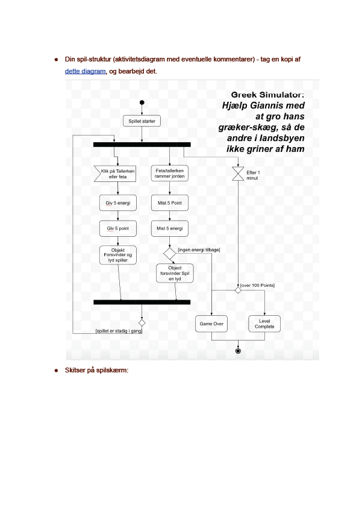

I dette tema har vi lavet to store opgaver. Vores eget spil lavet af os selv, og et projekt for Sex & Samfund relateret til deling af private billeder, der bundede ud i et spil og en annonce som gruppeopgave der skulle henvise unge i 13-15-års alderen til Privatsnaks hjemmeside. Selve animationerne var et stort fokuspunkt i dette tema og vi blev introduceret til programmeringssproget Javascript. Udover nogle guidelines havde vi stortset frihed til at lave hvad vi ville, det skulle dog godkendes. Vi blev introduceret til aktivitet- og statemachine diagrammer som vi kunne kode efter. Til slut i temaet skulle vi præsentere vores projekt til to 8. klasser og andre som var inviteret til ferniseringen.
I solo-projektet lavede jeg et spil ved navn Greek Simulator. Objektet er at smadre så mange tallerkner og spise så meget feta som muligt, så dit skæg kan gro til en acceptabel størrelse så landsbyen ikke griner ad dig.
I denne opgave blev vi bedt om at undersøge en målgruppe i alderen 13-15 år og vi skulle interviewe en teenager angående vores designvalg og stil. Vores idé var at vi ville sætte spilleren i en lidt unormal position, hvor man skulle dele de intime billeder, og slette de normale billeder. Dette gjorde vi for at fremprovokere en følelse af at man gjorde noget forkert og ved at gennemføre spillet, så fik man en lærestreg om at det var ulovligt det man havde gjort.
Selve temaet var et stort og langt tema med en masse nye læringsmål. Helt centralt havde vi CSS animationer og Javascript som det mere avancerede. Vi fik også arbejdet med implementering af lyd i Javascript samt diverse diagrammer til både dokumentation og for at gøre processen lettere.
Selve dokumentationen til spillet var en lang proces af idéer. Fra skitser, til farvevalg og valg af fonte osv.
